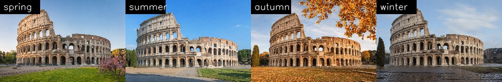
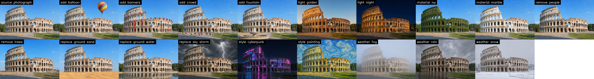

01 Geometry-guided generation
Lift a photograph into a point cloud, render depth along camera paths, and accumulate geometry across generated views.
One photograph. An edited reference. A scene you can reimagine.
Geometry-guided video generation brings your edits into consistent multi-view videos, distilled into one editable 3D Gaussian scene.
Shared geometry · Different appearance anchors · Synchronized cameras
Separate where things are from how they look. A shared geometry channel guides camera motion, while an edited reference controls appearance. The resulting paired videos supervise one editable Gaussian scene.
Lift a photograph into a point cloud, render depth along camera paths, and accumulate geometry across generated views.
Encode the change between the original and edited image into a latent that represents the appearance edit.
Distill paired videos into shared 3D geometry. Switch, blend, or re-edit its appearance through the color network.
The ControlNet branch receives normalized log depth, rather than RGB. Where the point-cloud rendering becomes sparse, the model completes the scene using the appearance anchor and its accumulated memory.
v = clip(−log₂(z / s) / 4, −1, 1)
s is the median source-view depth. Black indicates no point along the ray; the depth visualization uses a turbo color map.
Inverse depth compresses distant structures into a narrow range. Four octaves of log depth around the source median retain contrast in both the foreground and the far field.
The same depth renderings and camera trajectory, with four appearance anchors. Geometry always comes from the summer photograph. Select a scene to explore how its appearance changes while the camera moves.
Orbit right · 30°

Add, remove, replace, or modify. Explore 18 image edits across 7 landmarks, from a different time of day to a new material or a changed environment. Each edited photograph becomes the appearance anchor for a generated orbit.
Make it a cyberpunk night scene: neon signs in magenta and cyan on the building, holographic advertisements, wet street.
Objects absent from the source geometry, such as a balloon, can drift in depth. Some Colosseum edits hallucinate a foreground tree or pole; these examples are included in the explorer.

Same source viewpoint, different appearance anchors. Top-left in the video grid: no edit. The remaining clips add a balloon, add banners, remove trees, replace the ground with water, and apply ivy, night, snow, and cyberpunk edits.
Four chained segments extend 21-keyframe clips into 81-frame, 360° orbits. Each segment starts from the previous final frame while the appearance anchor remains fixed and the point-cloud memory accumulates.
Autumn · 360° orbit · 56 m radius
Autumn · 360° orbit · 83 m radius
Autumn · 360° orbit · 97 m radius
Autumn · 360° orbit · 83 m radius
Spring · 360° orbit
Autumn · 360° orbit · 47 m radius
Open-loop chaining can accumulate orientation drift, with some orbits ending in an aerial view. A fixed circular path can also intersect obstacles such as tree rows. These examples make the limitations of path planning and re-anchoring visible.
Four seasons and eighteen edits of the Colosseum, distilled into one shared Gaussian representation. Every tile uses the same geometry and the same camera path; only its appearance latent changes.
Lighting, material, and weather edits transfer cleanly. Edits that add or remove content—balloons, crowds, fountains, or trees—are limited by the shared geometry and can blur. These changes would require editing the geometry itself.
Evaluated across 7 landmarks × 4 seasons × 10 trajectories. The measurements capture camera motion, structural agreement across seasons, and how closely generated appearance follows the reference.
| Landmark | Motionmedian (minimum) | Edge IoUmean (minimum) | Saturationratio to reference | Valueratio to reference |
|---|---|---|---|---|
| Colosseum | 31.1 (20.4) | 0.58 (0.42) | 0.96 | 0.99 |
| Eiffel Tower | 18.0 (10.5) | 0.49 (0.32) | 0.97 | 0.98 |
| Great Pyramid | 18.1 (10.2) | 0.40 (0.15) | 0.99 | 0.99 |
| Great Wall | 33.0 (20.8) | 0.65 (0.49) | 0.97 | 0.99 |
| Notre-Dame | 31.9 (14.5) | 0.59 (0.43) | 1.01 | 0.99 |
| Sydney Opera House | 18.0 (12.4) | 0.46 (0.21) | 0.96 | 0.97 |
| Taj Mahal | 28.6 (14.1) | 0.42 (0.31) | 1.00 | 1.01 |
Reading the metrics. Motion is the mean gray-level change from frame 0 to frame 10; static anchor copies score below 10. Edge IoU measures agreement with the summer video along the same trajectory. Saturation and value are generated-to-reference ratios, where 1 means an exact match.
Interpreting the results. All 280 videos execute their camera paths. Structural agreement is highest on richly textured scenes and lowest on desert and water, where monocular depth is least reliable. Comparisons with RGB point-cloud conditioning and depth conditioning without appearance training are reported in the paper.